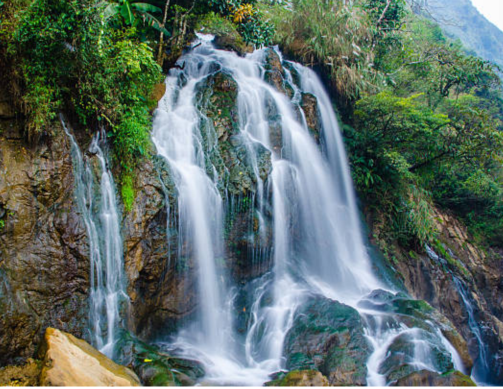
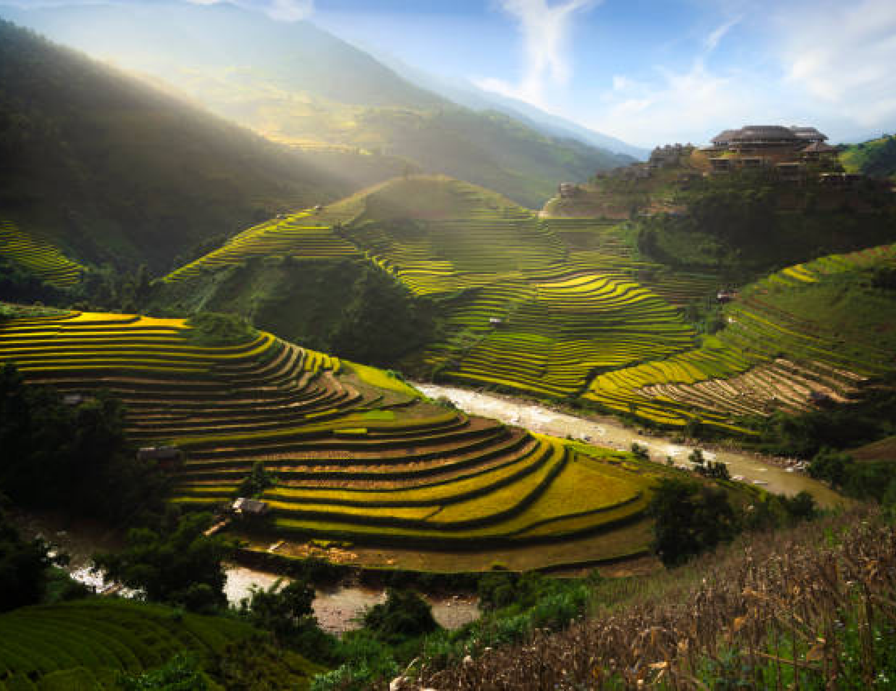
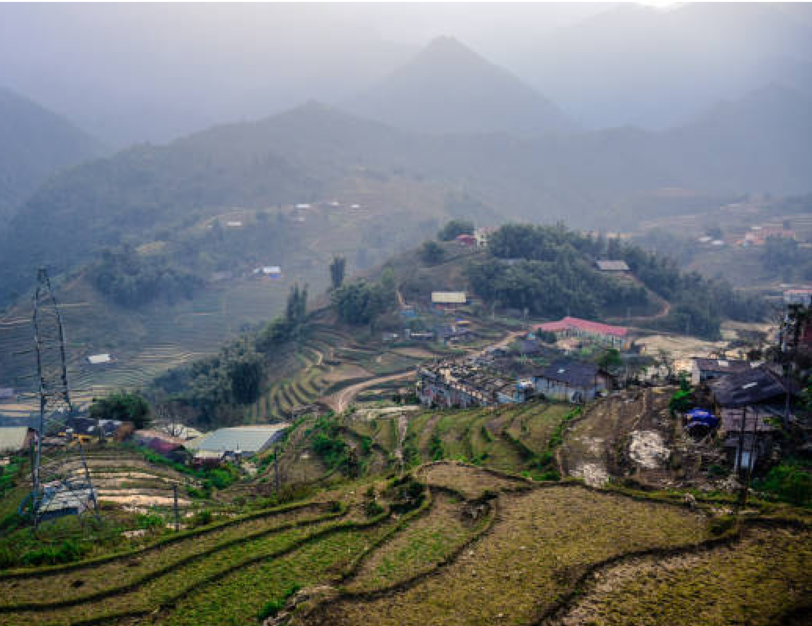
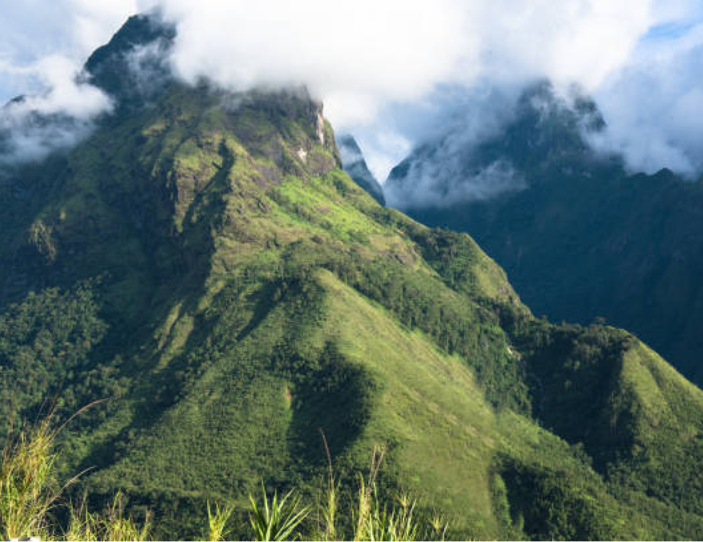

LAO CAI
Lao Cai is a stunning province in the northernmost region of Vietnam, renowned for its breathtaking natural beauty, cultural diversity, and historical landmarks. The province is a gateway to the famous Sa Pa town, nestled in the Hoang Lien Son mountain range, and is home to Fansipan Peak, the highest mountain in Indochina. Lào Cai boasts a rich tapestry of ethnic minority communities, including the H'mong, Dao, and Tay people, whose unique traditions and customs add vibrant cultural depth to the region. From the cascading Thác Bạc waterfall to the iconic terraced fields of Mu Cang Chai, Lào Cai offers an unforgettable journey through majestic landscapes. Whether you're an adventurer, a nature enthusiast, or a cultural explorer, Lào Cai promises a one-of-a-kind experience in the heart of Vietnam’s highlands.

Thac bac
Thac Bac is one of the most stunning natural attractions in Lào Cai province, located about 12 kilometers from Sa Pa town. The waterfall cascades from a height of over 200 meters, creating a majestic sight amidst the verdant mountains. Visitors are drawn to its serene beauty and the refreshing ambiance that surrounds the area. It’s a perfect spot for nature lovers and adventurers seeking a tranquil escape.
Adress:
National Highway 4D, San Sa Ho, Sa Pa, Lao Cai.
terraced rice fields.
Terraced rice fields in Lao Cai are a breathtaking cultural and agricultural wonder. Primarily found in the districts of Sa Pa, Mu Cang Chai, and Bac Ha, these fields are meticulously carved into the mountains by local ethnic minorities. The terraces offer stunning views, especially during the rice planting and harvesting seasons when they transform into a golden sea of crops. It’s a must-visit destination for travelers seeking both natural beauty and a glimpse into the traditional farming practices of Vietnam.
Adress:
Sa Pa, Mu Cang Chai, Bac Ha, Lao Cai.


Cat Cat Village
Ban Cat Cat is a charming traditional village located just a few kilometers from Sa Pa in Lao Cai province. Nestled in the Muong Hoa Valley, the village is home to the Black H'mong ethnic group, offering visitors a unique glimpse into their culture, lifestyle, and traditional crafts. Surrounded by stunning landscapes, including terraced fields and waterfalls, Ban Cat Cat is a popular destination for those interested in local heritage and scenic beauty.
Adress:
Address: Cat Cat Village, San Sa Ho, Sa Pa, Lao Cai, Vietnam.
Fansipan Peak
Fansipan Peak, known as the "Roof of Indochina," is the highest mountain in Vietnam, standing at 3,147 meters above sea level. Located in the Hoang Lien Son mountain range, near Sa Pa in Lao Cai province, the peak attracts adventurers and nature lovers from around the world. Reaching the summit offers breathtaking panoramic views of the surrounding mountains and valleys. Visitors can either hike the challenging trail or take a scenic cable car ride to the top for an unforgettable experience.
Adress:
Fansipan Mountain, Sa Pa, Lao Cai, Vietnam.
